{kind=link}
.jpg){kind=link}

The goal of this project is to write and apply code to morph between faces. The general approach we take is to define corresponding keypoints between the two or more faces we intend to warp between, and form a triangular mesh from those keypoints. We then deform the mesh from each face to match the other and interpolate between the shapes of each face while crossfading the pixels.
Throughout the project I use a photo of Leonardo DiCaprio and a photo of Christian Bale from Wikimedia commons licensed under Creative Commons. Here are the required attributions:
Andrea Cangioli, CC BY-SA 3.0, via Wikimedia Commons
Presidencia de la República Mexicana, CC BY 2.0, via Wikimedia Commons
To implement face morphing, we must start by implementing a tool for defining corresponding point pairs between images. We can do this using matplotlib’s ginput. We then use Delauney triangulation with opencv to form the grid. To save time manually labeling points, we can save the points using np.save to use again after we label them. he process is pictured below:
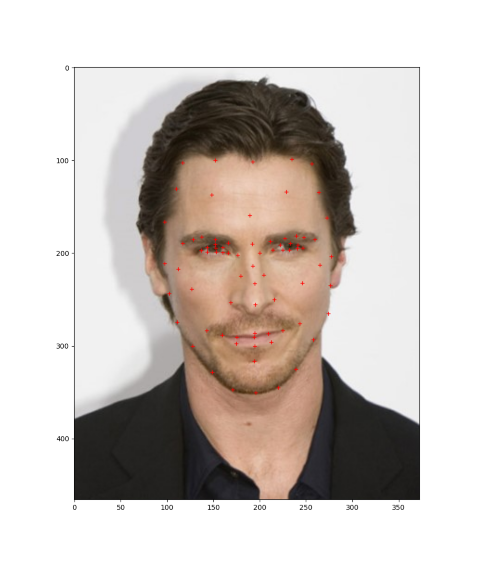 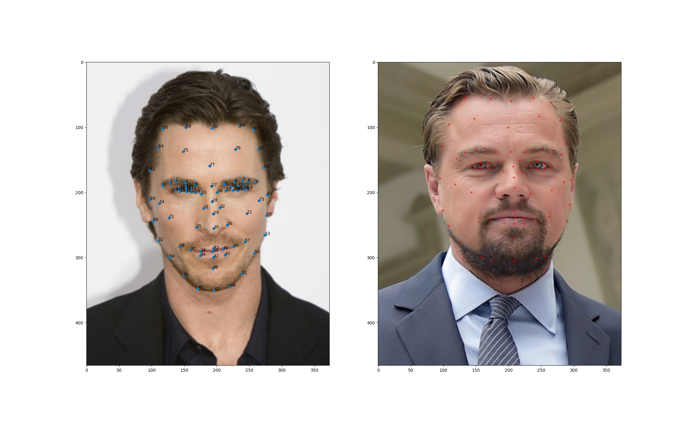 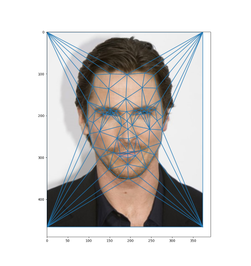 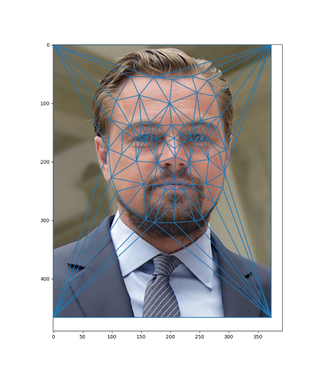
We continue to progress towards our goal of implementing warp sequences by computing the midway face between our images. We do this by warping each face’s triangular grid into the mean of the two grid shapes and then averaging the values at each pixel.
To warp the triangle grids, for each individual triangle, we use an affine warp to warp to the target shape, and we mask the resulting triangle to the target final triangle shape. We then combine all the triangles by taking the pixelwise max of all masked warped triangles.
We can compute an affine warp matrix by using least squares to solve for a linear transformation we can make on the input triangle points to get the output triangle points. To get the inverse warp matrix, we swap imputs and outputs. This therefore lets us know what pixel indices on the input correspond to each index on the output.
We demonstrate the midway face warp for the same photos of Leonardo Dicaprio and Christian Bale below:
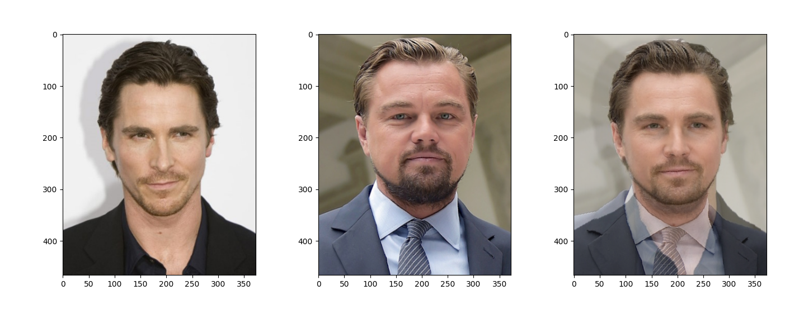
Following a similar procedure as the midway face, we can produce an animated warp between the two faces. We implement a new function, morph, that, instead of warping each triangle mesh to the midpoint, warps each triangle mesh to a weighted average of the two meshes and computes a pixelwise weighted average of the two warped photos. This way we can control how far along in a morph we create an image. Therefore, to create the final morph sequence, all we have to do is interpolate between the photos in shape while at the same time cross fading between the photos. We get the following result:
Using similar techniques, we can compute the “mean face” of a population. To do this, we can do the following:
Applying to the FEI face database on non-smiling images. Step two gives us the following results:
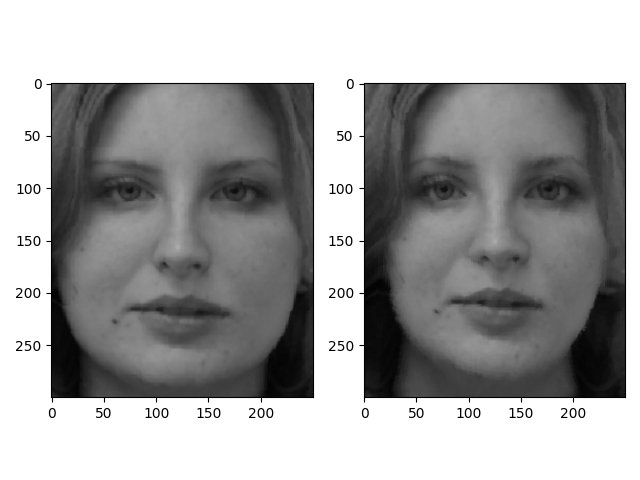 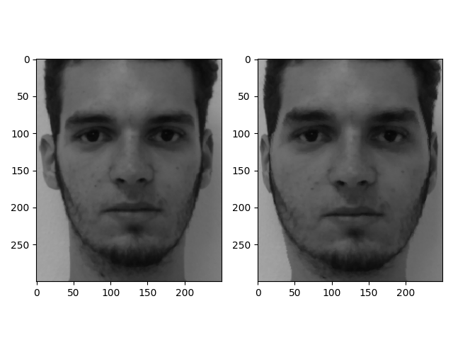 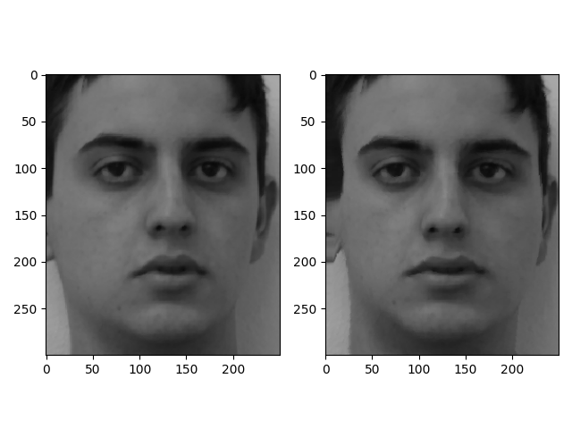 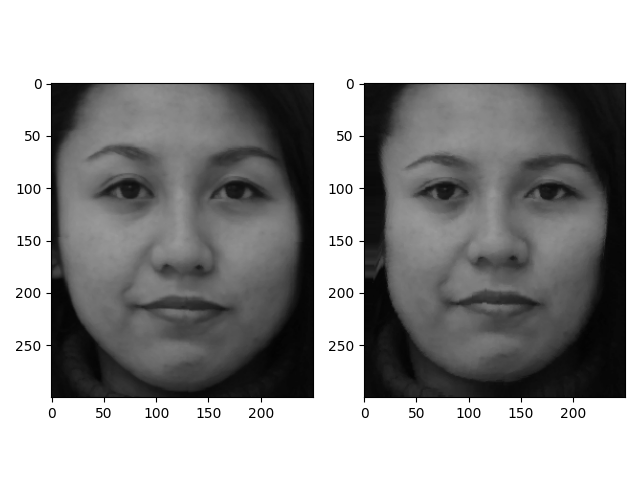 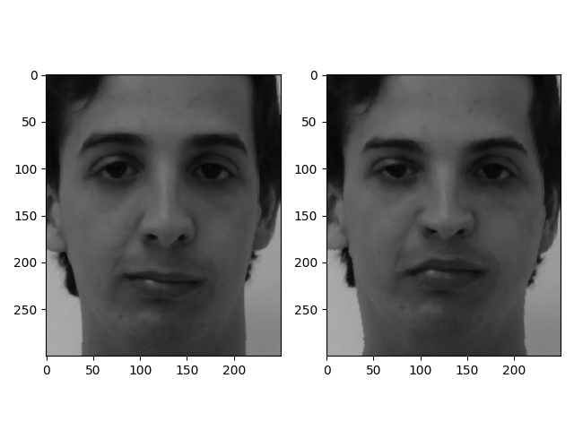 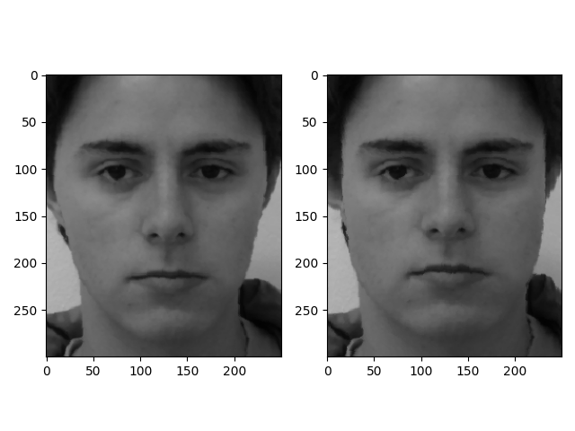
We get this final mean image:
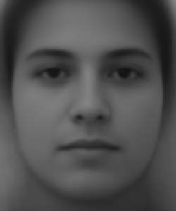
I can similarly warp my own face into the mean geometry:
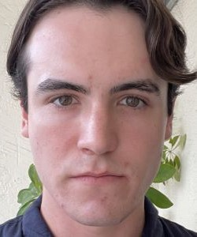 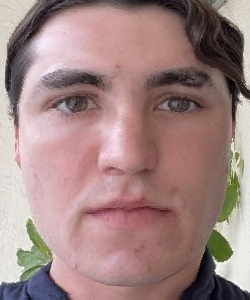
The reverse is also possible where the average face is warped to my face geometry:
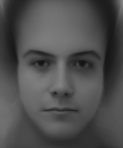
We have already shown that we can interpolate between my face geometry and the population mean geometry. But it is also possible to extrapolate. If we interpolate by computing for some
between 0 and 1, we can extrapolate by performing the same operation for
or
.
We get the following results for :
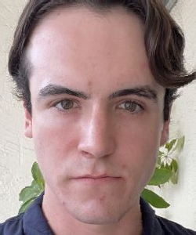
We get the following results for :
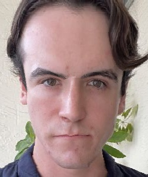
Decreasing below 0 progressively intensifies features that deviate from the mean, resulting in a charicature like image. This is because the equation we use makes the geometry move further from the mean in the direction that the face geometry already deviates from the mean geometry.
At , the face is narrowed, the forehead appears larger, and some features are sharpened. All these changes are amplified with
, but we also see some artifacting between the eyebrows. This suggests that there is a limit to how far we can extrapolate without breaking the structure of the image.
If we compute the average facial geometry of the set of images where people are smiling, we can apply this geometry to my face to change my expression to a smile.
Just modifying the geometry, we get the following transformation:

Taking this approach gives me a positive facial expression but the rest of my face is warped to the mean face, making it look very distorted.
We can also warp the average face to my geometry and interpolate between the pixel values.
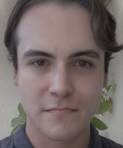 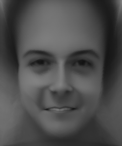
When we use use the mean appearance of a smiling person to my geometry you can see teeth, but the expression is not perfectly a smile. Also it does not look like me anymore. The middle image looks like a grayer version of the original photo of me.
Modifying the appearance and geometry, we get the following results:
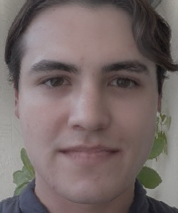
This makes my lips wider, widens my face, turns the sides of my mouth up closer to a smile, but it is still far from perfect.
I also attempted to manually define keypoints to tilt my mouth into a smile. My thought process here was that manually defining the points would let my face remain undistorted excluding the smile region.
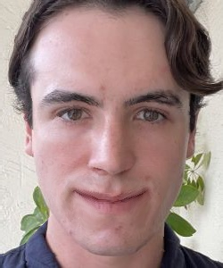
This result is the most desirable because it warps the mouth into a smile shape but does not distort the rest of the face much.